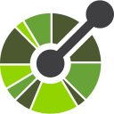

Desenvolvedor Front-end
Olá! Eu sou o Weslley. Desenvolvedor front-end com mais de 4 anos em Angular e TypeScript e passagem pela liderança técnica, construindo aplicações rápidas, testadas e fáceis de evoluir.
João Pessoa, Paraíba · Brasil

- Anos de experiência
- 4+
- Ano como líder técnico
- 1,5
- Testes automatizados nos projetos
- 1.600+
Acredito na tecnologia como ferramenta de transformação e em soluções que unam qualidade técnica, eficiência e valor para o negócio.
Este sou eu.
Olá, eu sou o Weslley.
Sou graduado em Gestão da Tecnologia da Informação e trabalho com desenvolvimento de software há mais de 4 anos, no ecossistema JavaScript e TypeScript, com foco em front-end com Angular, da v5 à v22.
Atuei no desenvolvimento e na evolução de aplicações web, com componentes reutilizáveis, integração com APIs REST e testes unitários. Por 1 ano e 6 meses fui líder técnico de front-end: conduzi decisões de arquitetura, defini padrões e orientei a equipe em Scrum.
Hoje curso a pós-graduação em Engenharia de IA Aplicada na Coders University, aprofundando integração de modelos e desenvolvimento de soluções inteligentes.
Minha stack
Front-end
 Angular
Angular TypeScript
TypeScript JavaScript
JavaScript RxJS
RxJS Angular Material
Angular Material- Ionic
 React
React Next.js
Next.js HTML5
HTML5 CSS3
CSS3 Sass
Sass Tailwind CSS
Tailwind CSS
Back-end
 Node.js
Node.js- Fastify
- tRPC

OpenAPI
Banco de dados
 PostgreSQL
PostgreSQL Supabase
Supabase- Drizzle ORM
Qualidade
 Vitest
Vitest Playwright
Playwright- Jasmine
- Karma
 GitHub Actions
GitHub Actions
IA e ferramentas
- Agentes com Mastra
- Integração de LLMs
- n8n
 Docker
Docker Git
Git
Experiência
-
Vox Tecnologia
Líder Técnico de Front-end
mai 2025 – out 2026
Decisões de arquitetura, padrões de desenvolvimento e orientação técnica da equipe, em Scrum.
-
Vox Tecnologia
Desenvolvedor Front-end Pleno
jun 2022 – jun 2025
Aplicações web em Angular, componentes reutilizáveis, integração com APIs REST e testes com Jasmine e Karma.
-
Fábrica de Software UBTech Office/Unipê
Estagiário de Desenvolvimento Web
mar 2020 – dez 2020
Formação
- Pós-graduação em Engenharia de IA Aplicada Coders University · out 2026 – abr 2027 (em andamento)
- Graduação em Gestão da Tecnologia da Informação Centro Universitário de João Pessoa (Unipê) · 2018 – 2020
Certificações em IA
- Gerador de Relatórios Financeiros com IA
- Pipeline de Qualificação de Leads com IA
- Análise de Comportamento de LLM para Atendimento Corporativo
- Framework de Testes para Prompts de IA
- Avaliação de Adoção de IA para Empresas
Projetos selecionados
Como eu trabalho
-
Plano antes do código
Especificação escrita, etapas pequenas e critérios de pronto. Cada etapa vira uma branch e um PR.
-
Decisões registradas
ADRs com o contexto, a escolha e o trade-off. Quem chega depois entende o porquê.
-
Prova automatizada
Testes contra banco real, E2E com acessibilidade e CI obrigatório na
main. -
Conferência em produção
Depois de cada deploy, um roteiro pelo caminho real. Achei assim bugs que nenhum teste pegaria.